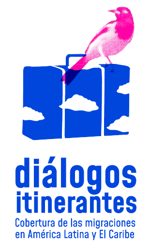

Guía Puentes de Comunicación III
La sala de Puentes de Comunicación
Periodismo colaborativo y transformador
Somos seres en movimiento. Nos define el camino, la ruta, también el tránsito. América Latina y el Caribe no puede entenderse ni explicarse sin que la migración se dibuje en los diálogos de todos y todas. Y justo por querer entenderlo es que DW Akademie, con el apoyo del Ministerio Federal de Relaciones Exteriores de Alemania, hemos desafiado al tiempo, y durante tres años consecutivos mantuvimos vigente en la agenda periodística un programa que aporta relevancia a la cobertura migratoria con un objetivo clave, promover la integración.
Tres años después de imaginarnos Puentes de Comunicación y de materializarlo, primero junto a la organización venezolana Efecto Cocuyo y su Escuela de formación de periodistas, y en esta tercera versión con el apoyo de El Faro, de El Salvador, compartimos con la esperanza de que, de alguna manera, seguimos contribuyendo a la desestigmatización del migrante, de hombres, mujeres, niños, niñas y adolescentes que ejercen la movilidad humana como un derecho inherente a la vida. Y lo hemos hecho acompañados de periodistas y comunicadores desde sus territorios y, por supuesto, de los protagonistas de las historias, las personas que migran.
¿Cómo lo hemos hecho?, creamos de forma colaborativa la primera y más grande Sala de Formación y Redacción de la Cobertura Migratoria de América Latina y el Caribe. Sesenta colegas de diversos medios de comunicación se juntaron durante el 2022 en un laboratorio de aprendizaje, acompañamiento y producción editorial. Allí juntaron ideas, herramientas y sonrisas, y comenzamos a darle forma a piezas de largo alcance que se han constituido en uno de los resultados más hermosos del proceso, pero no es el único. Lo que se logró tejer en este tiempo y en los dos años anteriores es una poderosa red de periodistas que cubren la migración y sus distintas subcategorías. La Sala es un lugar de encuentro, de escucha. Es la primera en su género en este tiempo de pandemia y pospandemia, la cual se ha articulado alrededor de todas las metodologías blended learning y por supuesto las de las salas de redacción periodísticas que se han fortalecido en un tiempo acelerado de disrupción digital.
Cada proceso y cada paso hace parte de Puentes de Comunicación y también de la Escuela Cocuyo . Allí está la memoria y también en esta guía 'Diálogos itinerantes, cobertura de las migraciones en América Latina y el Caribe', que reúne las reflexiones de expertos estudiosos de la migración, el refugio, el exilio; de periodistas latinoamericanos que llevan la agenda de la movilidad humana desde hace años; de diseñadores y técnicos que suman las herramientas digitales y metodológicas para desarrollar efectivos formatos que acompañan las investigaciones y de los participantes del programa, que en una generosidad infinita comparten sus historias de migración en clave de oportunidad y otras tantas de desplazamiento forzado interno y externo. La Guía Puentes de Comunicación III es un aporte a estos procesos que, tanto DW Akademie, como Efecto Cocuyo y El Faro, nos comprometemos a seguir impulsando.
Rodrigo Villarzú
Director
DW Akademie Latinoamérica

↓ Descargar guía en PDF